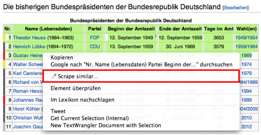
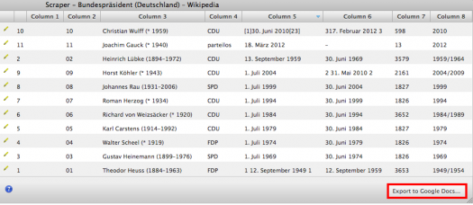

HTML auf Webseiten eingebunden sind, lassen sich nicht immer problemlos durch Copy & Paste in ein neues Dokument überführen. Oft werden HTML Fragmente übernommen, die die Tabellenstruktur zerstören. Bis vor wenigen Monaten konnte man den mächtigen Service von Needlebase für diese Aufgabe in Anspruch nehmen. Derzeit wird Needlebase in die Google Produktfamilie integriert – hoffentlich in OpenRefine. Bis dahin setze ich momentan auf Scraper – eine Google Chrome Extension, die brauchbare Ergebnisse liefert. Prima an der Extension ist die direkte Exportfunktion in ein Google Spreadsheet, d.h. man benötigt ein Google Account.
Und so einfach kommt man an die Datentabelle: Zunächst muss die Google Chrome Extension Scraper installiert werden. Für die Demonstration habe ich mir die aktuelle Übersicht der bisherigen Bundespräsidenten der Bundesrepublik Deutschland auf Wikipedia ausgesucht. Ich markiere die ersten vier Zeilen der Tabelle und klicke auf die rechte Maustaste. Dort wähle ich aus dem Menü die Option Scrape similar aus. Scraper selektiert nun automatisch alle nachfolgenden Zeilen, die zur Tabelle gehören.

Und so sieht das Ergebnis aus. Sollte das Ausgabefenster leer sein, genügt ein Klick auf die rechte Maustaste und die Auswahl der Option Neu laden, um das Ergebnis sichtbar zu machen. Ein abschließender Klick auf Export to Google Docs leitet uns auf die Webseite von Google weiter, falls wir nicht schon eingeloggt waren. Dort erscheint nun die Tabelle in einem Google Spreadsheet.
